Bombora's new line of surfboards will focus primarily on craftsmanship and customer satisafcation. Operated out of Montauk, NY, our small, locally owned and operated business emphasized one-of-a-kind, handcrafted boards custom-made and painted by our talented group of artisans and craftsmen. These designs can be commissioned on an individual basis or the customer can select from a number of themes provided on our website.
Our goal is to be more ecologically minded and less profit driven. In order to ensure the quality of its porducts, Bombora is not only operated locally but also makes use of many local materials. Our company offer the most cutting edge in surfboard manufacturing utilizing composite technology (foam and fiberglass) that will be ecologically friendly. These surfboards will be able to be customized on an individual basis using 100% recycled EPS foam cores finished with epoxy resins allowing for exquisite control. Additionally more traditional boards, each individually handmade, will be made from a variety of woods.
As a non-profit organization, all profits from sales go towards protecting America's plant and animal endemic species. Our artists concentrate on the thematic links within nature in order to constantly remind our customers of their role in helping to preserve the health of our local ecosystems.
We value our customers and encourage them to post their feedback and recommendations on our blog in addition to videos and photographs documenting their experiences using our products.
 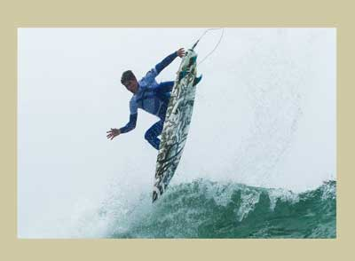
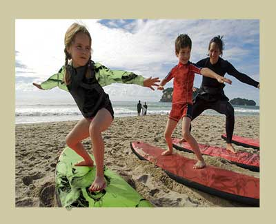
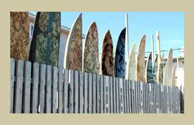
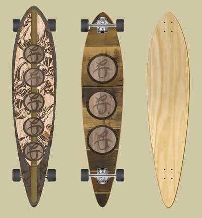
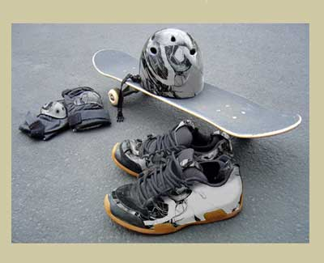
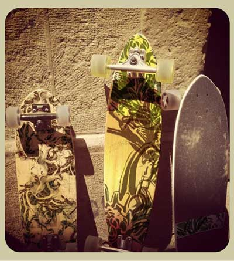
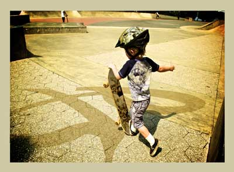
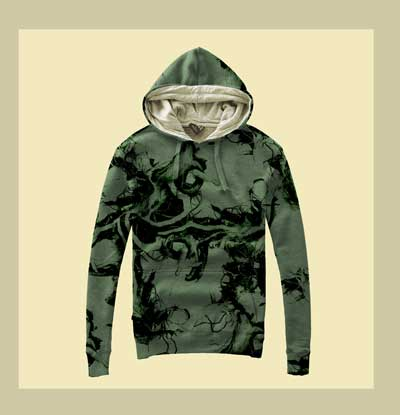
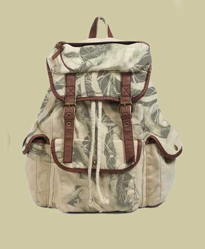
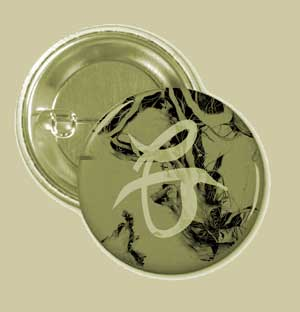
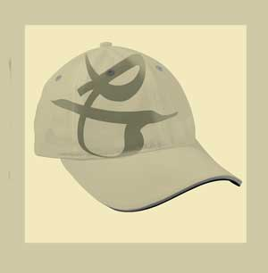
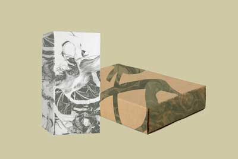
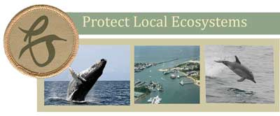
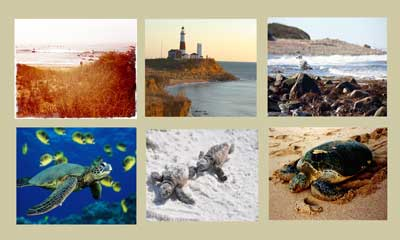
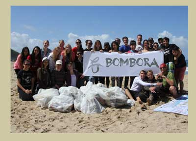
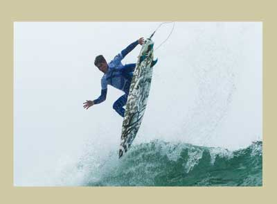
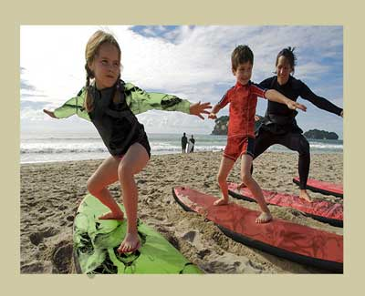
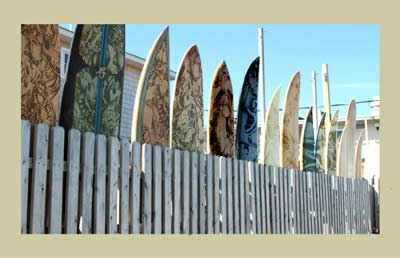
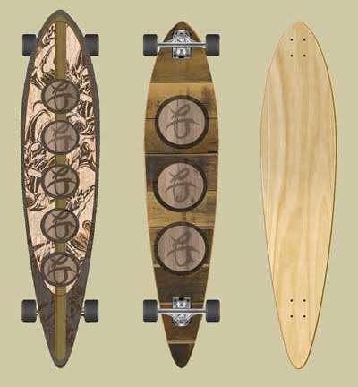
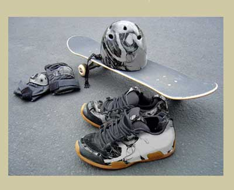
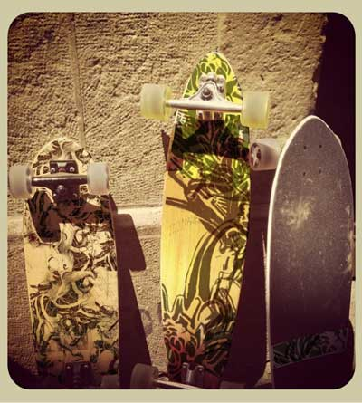
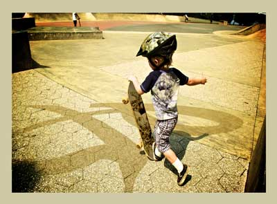
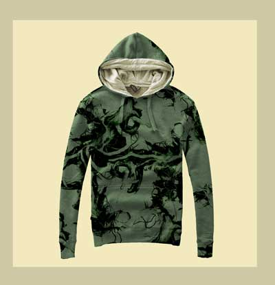
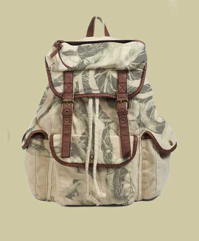
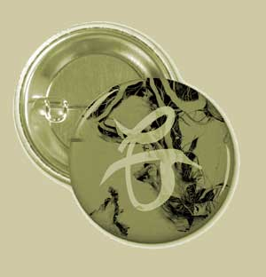
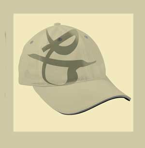
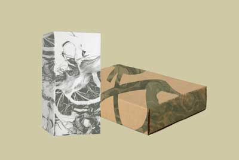
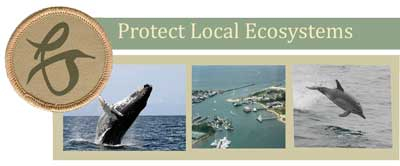
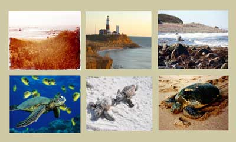
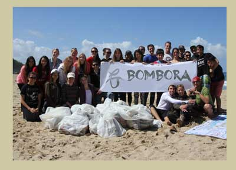
Montauk, NY is one of our contry's ecological treasures and has provided for sea turtles, seabirds, sharks, migratory whales, and other threatened marine species. In addition to being a great place for surfers and beachgoers, Montauk supports economically valuable recreational and commercial fisheries. However, due to the increasingly urbanized shorelines within New York couples with the threat of unsustainable fishing practices, offshore mining, extensive vessel traffic, and climate change, the health of these animal species is threatened. As part of our mission, the proceeds from Bombora's sales go towards protecting the extraordinary array of habitats found in local waters including estuaries, nearshore migration corridors, deepsea canyons, and the sandy continental shelf and from Montauk, NY to Cape May, NJ.
Through field and policy-oriented activities and increased educational outreach, Bombora aids in the recovery of marine wildlife populations and reconnects our customers, and the public at large, to the great seascape right outside our doors. We work in partnership with the New York Aquairum and local conservation initiatives. If interested in community beach clean-up, turtle watches, species counts, or sponsoring a shark from a local fishery, contact Bombora on our website.
Our New York waters are home to over 330 species of marine fish, 4s species of turtles and over 40 species of rays. Additionally, it is part of the migratory path for various types of dolphins and endangered humpback, fin, and right whales. The amazing diversity of marine life in these waters is due in part to the extreme seasonal water-temperature fluctuations that lead to the mingling of northern and surbtropical species as they migrate through the mid-Atlantic.